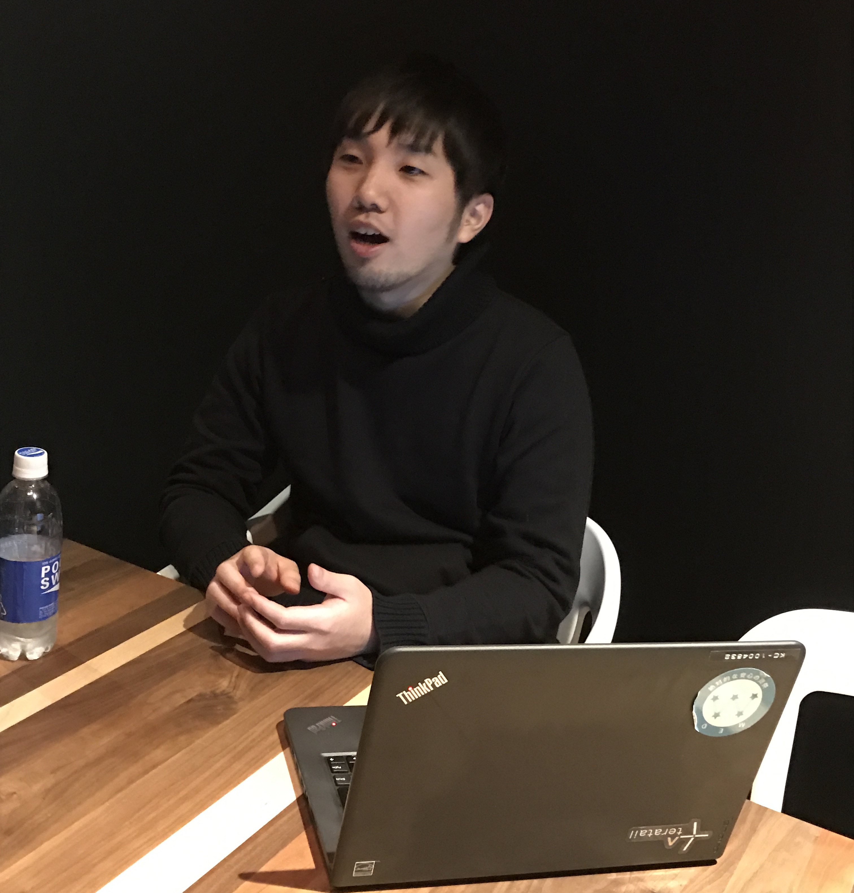

自分の名前以外全てを訂正された新卒時代/辻本 悠祐
みなさま、お疲れ様です！インターン一同です！
これがなんと最終回のインタビュー記事です！！！
この企画をすすめていたインターン生は先週をもって全員が卒業してしまいましたが、、、
早いことでこの記事の配信を開始してはやくも２ヶ月ですね！
みなさま楽しんでいただけましたか？楽しんでいただけていたら本当に嬉しいです！
ではでは、最後のインタビュー記事に参りましょう、、、
では、本日のインタビューは前回にも告知しました通り、、、、、、、、、
みなさま、お疲れ様です！インターン一同です！
この企画をすすめていたインターン生は先週をもって全員が卒業してしまいましたが、、、
早いことでこの記事の配信を開始してはやくも２ヶ月ですね！
みなさま楽しんでいただけましたか？楽しんでいただけていたら本当に嬉しいです！
ではでは、最後のインタビュー記事に参りましょう、、、
では、本日のインタビューは前回にも告知しました通り、、、、、、、、、

辻本 悠祐さん / Yusuke Tsujimoto
2012年9月入社
前職のメガバンクにて営業部と企業調査部にて合計3年弱在籍したのちに、レバへ入社。
レバに入社後は大阪支店でCAをし、のちに船橋支店で立ち上げを行い、現在は西日本ブロック長&大阪支店長。
昨年11月に社内結婚をして、最近兵庫県民になったとか
ーいつもどりですが、まずは辻本さんのお人柄をお伺いしていきたいと思います。
ー辻本さんと言えばスポーツをばりばりやってこられたイメージなのですが、どんな幼少期を過ごしてこられたのですか？
確かにスポーツはばりばりやってましたが、
実際のところ、小学校の時は適度にスポーツし、適度に勉強という感じでした。
特に中学校の時は、大学まで一貫の高校に入るために、勉強に力を入れていました。
ちなみにですが、小学校、中学校と6年間ずっと野球をしていました。
ー高校からは野球以外のスポーツをされていたのですか？
高校へ上がったタイミングで日本拳法という競技武道を大学までの９年間やっていました。
違うスポーツに切り替えたきっかけは、個人競技に興味があったことと、
競技人口少ないスポーツの方が自分次第で上にあがれる可能性が高いと思ったからですね。
よくある話ですが、団体スポーツは自分がどれだけ頑張っても勝てない時がありますが、
個人スポーツなら全て自分次第となりますので。
ーその中でなぜ日本拳法を選んだのですか？
日本拳法は私の大学が発祥の武道で、とても盛んに行われていたからですね。
全国大会にもよく出ている部活でしたので。
高校のときはなかなか結果を残すことができなかったので、もう大学のときは必死でして、
がっつり日本拳法に染まっていました（笑）
大学の練習は本当にきつかったのですが、結果として、団体戦でチームの主将として日本一になることができました。
（調べたところ、優勝した大会で辻本さんは最優秀選手賞をとっていました、、）
ー日本一は本当にすごいです！
ー話は変わりますが、辻本さんは難しそうな本をよく読まれているイメージなのですが、どんな本を読まれているのですか？
基本的には自分の興味がある本を中心に読んでいます。
昔は人に薦められた本を買うようにしていたのですが、
やっぱり自分の興味のない本って結局は読まずに積ん読になってしまうことが多いんですね（笑）
ですので今は書店で目に止まった本の目次を手当たり次第みて、
興味があるなと思った本をどんどん読んでいくようにしています。
あと、本をいろいろ読んでいると、
作者ベースで、自分にとって読みやすいなとか、この人の感性がすごく自分にフィットするなとかがわかってくるので、
その著者が新しい本を出した時に、ジャンル問わずに読むようになっています。
ですので今は結構作者ベースで本を買っています。
ー好きな作者を教えてください！
少し前は、京セラの稲盛 和夫さんがめちゃくちゃ好きで稲盛さんの本は読みあさっていました。
今は、マッキンゼーでコンサルを長年してから起業家に転身された大前研一さんの本が好きです。
あとは、ライフネット生命の創業者で元CEO、現同社の会長をされている出口治明さんの本もよく読みます。
今実際に読んでいるのはネスレ日本の社長の高岡浩三さんの『ゲームのルールを変えろ』という本を読んでいます。
この本はリーダーシップ論やイノベーションについて高岡さんの考えが密に述べられていて、とてもオススメですね！

ー仕事に関してお伺いしていきたいと思います。
ー前職はメガバンクで、レバが2社目だとお伺いしましたが、なぜ最初は金融を選ばれたのですか？
いつも金融を選んだ理由を聞かれたら話している面接用トークを話しますね（笑）
就活の最初は、日本拳法を始めた理由でもある、「自分の力でバリバリ勝負できる」、という軸と、
「無形の商材を扱いたい」、という軸の２本軸で就活を始めました。
金融をみていくと証券や保険といった様々な形態がありましたが、
私は性格的に、一つのものに特化したスペシャリストになるよりも、幅広く色々なことができるゼネラリスト、
つまり業務が多岐にわたる銀行の方が向いているなと思い、金融を選びました。
そして、その銀行を選んだのは、
肌感的の合う人が多かったことと、大学のときにお世話になった先輩がいたということで最後は決めました。
ー前職ではどんなことをされていたのですか？
私のキャリアは少し変わっていて、というのは、
700人程いた同期の中で、順当に行けば体育会系はみんな兵隊のようにずっとゴリゴリ営業をさせられるですが、
私は2年目まで営業をしたのちに、企業調査部という個社分析や業界調査を行い、
それに関するレポート作成をする本部部署に異動になりました。
銀行員の中でも結構珍しい人事異動でした。
企業調査部では、7人のチームでやっていたのですが、私以外は京都大学を出ている人ばかりで、
中には京都大学を首席で出ているような人もいました。
おそらく、めちゃくちゃロジカルな人間の中に、ゴリゴリの体育会系の人間を一人放り込んだらどうなるんだろう、
っていう実験的な試みだったのかもしれませんね（笑）
ーそんな環境の中ですごされていかがでしたか？
最初は本当に大変でしたね（笑）
ちょうどその頃、最近買収されたシャープの決算説明会に参加したことがありました。
私の仕事は、その説明会での話を会場の一番後ろで聞いてメモし、
会社に帰ってレポートにまとめる、というものだったのですが、
その当時一番お世話になっていた上司に提出したところ、
自分の名前以外一字も残ることなく、全て訂正されて返ってきたことがありました（笑）
でもその経験は本当によかったと思っていますね。
それまで営業も含めてすべて感覚的にやっていたのですが、
その上司のおかげで、論理的に考える力を身につけることができました。
自分がよく若い子達にフィードバックする「数字で説明して」や「結論から話して」「事実と主観を分けて」といった内容も、全部自分がその当時言われてたままの話です（笑）
それが今の私のベースになったと思っていますね。
ーなぜそんな中で転職をお考えになったのですか？
もっと事業全体を見れる仕事をしたいと思ったのと、組織の構造に不満があったからですね。
転職を考え始めた時期は、ちょうど私が、その企業調査部に2年弱いたのちに、
再度異動で戻った営業で、福岡で法人営業をしていましたころでした。
そこで私の性格的にですが、もっと事業の全体をみたいと思うようになっていて、
それと、銀行の組織的に縦社会が強くてそこに不満を持っていた頃だったので、転職を決めました。
余談ですが、銀行組織は面白いもので、みんなそれぞれの人の名前だけでなく、入行年次まで覚えているんです（笑）
どれだけ社内の評価を集めて出世していくかの世界なので、みんな入行年次までしっかりと覚えているんです（笑）
そこで私は10年後20年後を考えてみたときに、この世界で生きていくのしんどいなと思いましたね。
ーそうなんですね。なぜそこでレバを選んだのですか？
正直いうと、エージェントに紹介してもらうまではレバって全く知りませんでした。
転職活動する時に人材中心で探していて、
金融にいた時も面接とか採用に携わることがあり、人の転機に携わる仕事っておもしろいと感じたんです。
そこでレバを紹介され、直接話を聞いたり、実際見学したりして思ったのが、
いい意味でも悪い意味でも言い訳できない環境っていうのを感じました。
自分が入った時、レバはまだ5年目のベンチャーで前職の縦社会とは全く違ったのですが、
転職してチャレンジする環境としていいかなと思いました。
ー今の辻本さんにとって、短期的な目標はなんですか
大阪支店を移転できる規模にする、というのを今年度の個人的な目標として掲げてきました。
具体的には、安定的に売り上げを出すこと、採用で人を増やすこと、定着できる組織にすること、
という三本柱で、移転できる規模にまで持っていきたいという思いがありますね。
また、大阪支店にさらに他の事業部がこれるように体制を整えたいとも思っています。
ー実際に増床することになりましたね！新しいオフィス楽しみです。
ー仕事以外での辻本さんの夢はありますか？
明確なことは決まってないですが、
常に年齢関係なく目の前のことにやりがいを持って取り組めるような人生でありたいと思っていますね。
ーちなみに内藤さんとはどういう感じですか？
半年以内のスピード婚。
それ以上はノーコメントで。（笑）
何を聞かれても絶対何も言いません。（笑）
ー聞きたかった（笑）ではこれがこのインターン生企画の本当に最後の質問になります。
ーインターン生に一言ください！
常に目的意識を持ちながら考えて仕事して欲しいと思っていす。
今インターンしてもらってますが、業務ってルーチンワークが多くて、
考えながらやっていないと、だんだん疲れてきて、しんどくなってくるんですよ。
なので、これは何のためにやっていて、これをどういう風に変えれば良くなるかって、
常に意識して考えながら仕事をすると、さらに上のステップを目指すことができるはずです。
また、仕事ってやりたくない仕事が8割、9割かなと思っていて、そのやりたくない仕事をどれだけやりがいある仕事に変えていけるのかは自分次第だと思います。
ちなみに自分はやりたくない、苦手だなって感じる仕事が来た時は全て成長痛だと思ってます（笑）
前向きにマインドセットするだけで、仕事に対する姿勢も変わり、結果的に苦手→得意→やりがいに変わることも結構多いです。
なので、インターン生にはどんな仕事も高いマインド持ってチャレンジして欲しいと思ってます！
これにてこの企画の全記事の配信が終了しました！
しかし！！！ まだまだこの企画は終わりません。
なんと期間限定で3月末までポータルサイトに掲載していただけることになりました！！！！
後日レバ新聞にて広報していただくのでお楽しみにしていてください！！
 |  |
 |  |  |
 |
 |
Daisuke.A |
Yuto.T |
Tomoya.S |
Naho.Y |
Ayaka.D |
Masashi.K |
Kaori.T |